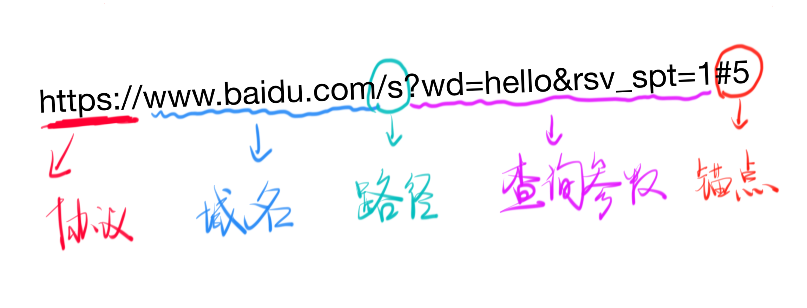

历史
首先是李爵士(Tim Berners-Lee)发明了万维网(World Wide Web)，90年代之前，在互联网上人们当时使用的主要应用就是 Email，而 www 就在这样的历史背景下诞生了，www 主要包含3个概念
- URI, Uniform Resource Identifier, 统一资源标识符, 通常用来表示网址
- HTTP, HyperText Transfer Protocol, 超文本传输协议，
- HTML, HyperText Markup Language，超文本标记语言，主要用来显示页面和做页面间的跳转
解释一下 URI
URI 主要分为 URL 和 URN
- URL，Uniform Resource Locator,统一资源定位符，它是因特网上标准的资源的地址
- URN，Uniform Resource Name，统一资源标识符
有什么区别呢?很简单，比如说一本书的 URN, 以 《JavaScript高级程序设计》为例，它的 URN 为 ISBN: 9787115275790，可以将这个 URN 在谷歌上搜索，就可以查到这本书，所以它是 一种期望为资源提供持久的、与位置无关的标识方式，相当于说我知道这本书的名字，但是我不知道它放在图书馆的什么地方。
而 URL 呢? 它是与位置相关的，我们可以通过 URL 确定一个唯一的地址，我们可以通过这个地址去访问资源。
所以一般来说用 URL 会比较多，因为方便。URL 的标准格式如下协议类型:[//服务器地址[:端口号]][/资源层级UNIX文件路径]文件名[?查询][#片段ID]
例如:

这个锚点就是浏览器中”推荐位”的位置，如果是 5,就把 5 对应的搜索结果下拉到第一的位置
解释一下 DNS
其实就是 Domain Name System ,即域名解析系统，将对应的域名解析成 ip 给客户端访问
请求与响应
见下图
这个就是浏览器和服务器的交互过程，基本上就是，浏览器发起访问请求，然后服务器接受到请求之后就会发起响应给浏览器，然后浏览器就下载响应内容呈现给用户，整个交互过程的协议就是 HTTP，另外，交互中服务器使用的端口为 80 端口。
请求
请求的格式如下1 动词 路径 协议/版本
2 Key1: value1
2 Key2: value2
2 Key3: value3
2 Content-Type: application/x-www-form-urlencoded
2 Host: www.baidu.com
2 User-Agent: curl/7.54.0
3
4 要上传的数据
注意:
- 这里的请求 最多包含四部分(1 2 3 4)，最少包含三部分(1 2 3)
- 第三部分(3)是回车，没有其他内容
- 这里的”动词”表示的是 请求方法，像 GET HEAD POST PUT DELETE TRACE OPTIONS 等
- 这里的”路径”就是 url,它包括了查询参数，但是不包括锚点
- 如果输入没有路径，那么默认的路径就是 /
- Content-Type 标注了 4 的格式
例如curl -s -v -- "https://www.baidu.com"
请求为GET / HTTP/1.1
Host: www.baidu.com
User-Agent: curl/7.47.0
Accept: */*
响应
响应的格式如下1 协议/版本号 状态码 状态解释
2 Key1: value1
2 Key2: value2
2 Content-Length: 17931
2 Content-Type: text/html
3
4 要下载的内容
注意:
- 状态解释可以不去理解它
- 第 2 部分的 Content-Type 标注了第 4 部分的格式
- 第 2 部分的 Content-Type 遵循 MIME 规范
例如curl -s -v -- "https://www.baidu.com"
响应为HTTP/1.1 200 OK
Accept-Ranges: bytes
Cache-Control: private, no-cache, no-store, proxy-revalidate, no-transform
Connection: Keep-Alive
Content-Length: 2443
Content-Type: text/html
Date: Thu, 25 Jan 2018 23:59:53 GMT
Etag: "58860402-98b"
Last-Modified: Mon, 23 Jan 2017 13:24:18 GMT
Pragma: no-cache
Server: bfe/1.0.8.18
Set-Cookie: BDORZ=27315; max-age=86400; domain=.baidu.com; path=/
一堆 HTML 代码...
几个需要记住的状态码
状态码的第一个数字代表当前响应的类型
- 1xx 消息 — 请求已经被服务器接收，继续处理，这个不常用
- 2xx 成功 — 请求已经成功被服务器接收、理解、并接受
- 3xx 重定向 — 需要后续操作才能完成这一请求
- 4xx 请求错误 — 请求含有词法错误或者无法被执行，通常表示客户端发送请求时出问题的情况
- 5xx 服务器错误 — 服务器在处理某个正确请求时发生错误
以下是一些经常用到的状态码
200 OK
请求已成功，请求所希望的响应头或数据体将随此响应返回
301 Moved Permanently
被请求的资源已经被永久移动到新的位置，并且将来对此资源的任何引用都应该使用本响应返回的若干个 URI 之一,简单来说就是 重定向了
302 Found
要求客户端执行临时重定向，由于这样的重定向是临时的，客户端应当继续向原有地址发送以后的请求
403 Forbidden
服务器已经理解从客户端发送过来的请求，但是拒绝执行它
404 Not Found
喜闻乐见的 404,这是表示请求失败，即请求所希望得到的资源没有在服务器上发现，但允许客户端的后续请求
500 Internal Server Error
通用错误消息，服务器遇到了一个不曾预料的情况，导致了它无法完成对请求的处理
502 Bad Gateway
作为网关或者代理的服务器尝试执行请求时，从上游服务器接收到的无效的响应